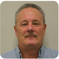

Director & Principal Consultant
Ken Stapleton
AssDip Mining Eng
Ken is a mining engineer with over 35 years of experience in open-pit mine operations, planning, cost estimation, mining contract management and project development. He has worked all over the world — across Australia, Papua New Guinea, Indonesia and New Caledonia — with experience spanning coal, nickel, gold and copper mining.